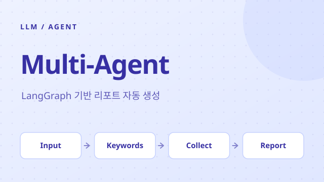
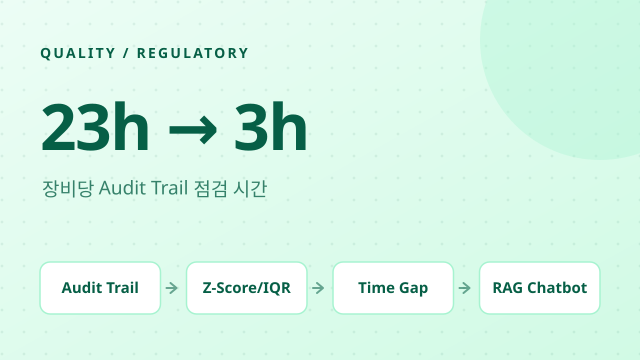
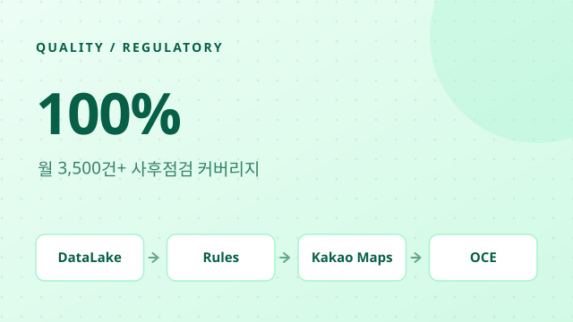
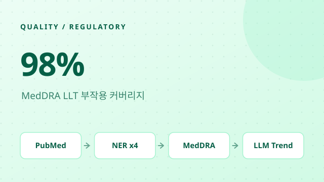
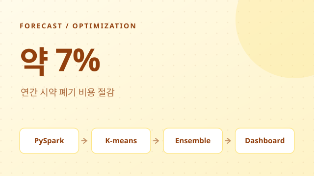
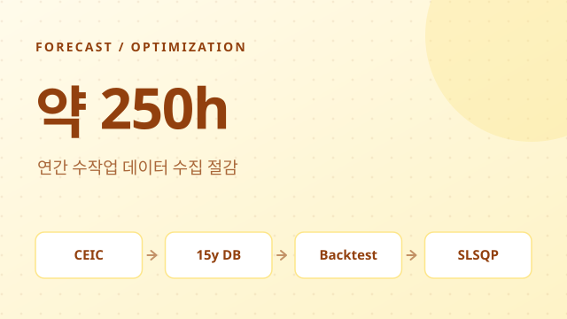
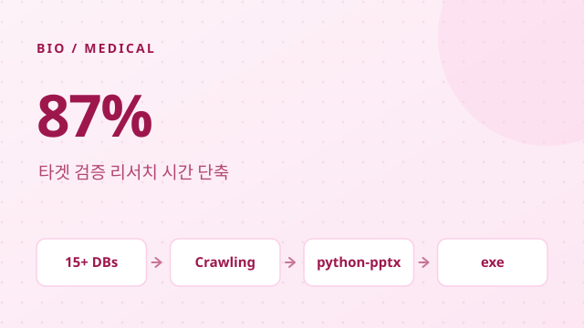
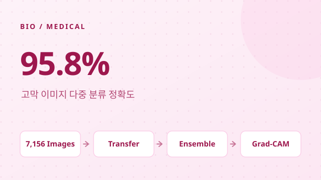

Hello, I'm
병원, 헬스케어 지주사, 제약/화학 현업까지 규제가 엄격한 환경에서 8년 넘게 데이터 확보부터 모델 배포까지 AI 시스템을 직접 만들어 왔습니다. 지금은 Multi-agent LLM 오케스트레이션, 문헌 정보화, 규제 컴플라이언스 자동화 중심으로 AX 과제를 개발합니다.

LG화학 / 2026
Multi-agent orchestration 파이프라인으로 타겟 기업의 재무제표/특허/뉴스를 수집, 분석하고 통합 분석 리포트를 자동 생성하는 R&D Planning 에이전트.

LG화학 / 2025
연간 5만 건+ HPLC Audit Trail 데이터를 100% 자동 전수 점검하는 DI 모니터링 플랫폼. 시간 갭 분석으로 재처리 의심 케이스를 자동 탐지. 장비당 23h → 3h 점검 시간 단축.

LG화학 / 2024
MR 활동비 이상 패턴 탐지 시스템. 3,500+ 건/월 100% 자동 심사. OCE 엔터프라이즈 플랫폼 배포 완료.

LG화학 / 2024
PubMed 기반 부작용 문헌 자동 감시. 4-모델 NER 앙상블, MedDRA 98% 커버리지.

LG화학 / 2023
약 800종 시약의 3개월 선행 사용량 예측. K-means 클러스터링 + 앙상블 ML로 연간 폐기 비용 약 7% 절감. 3개 플랜트 확대 적용.

LG화학 / 2023
15년 거시경제 시계열 DB + SARIMA/HoltWinters/Prophet 앙상블 + SLSQP 가격 최적화. 사내 AX Best Practice 수상.

LG화학 / 2023
15+ 외부 DB 크롤링 → python-pptx 자동 보고서 생성. 리서치 시간 87% 단축 (120분 → 5~20분).

서울아산병원 / 2019
고막 내시경 이미지 다중 분류. VGG16/ResNet/DenseNet/EfficientNet 앙상블, 95.8% 정확도. PLOS ONE 게재.